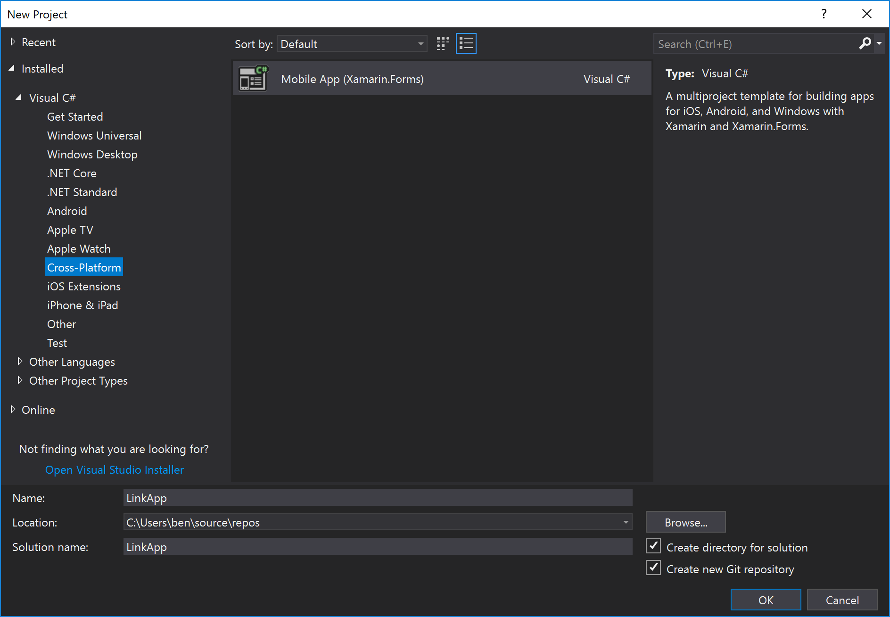
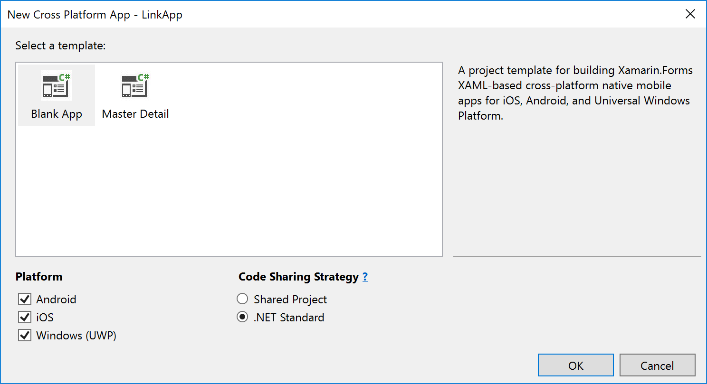
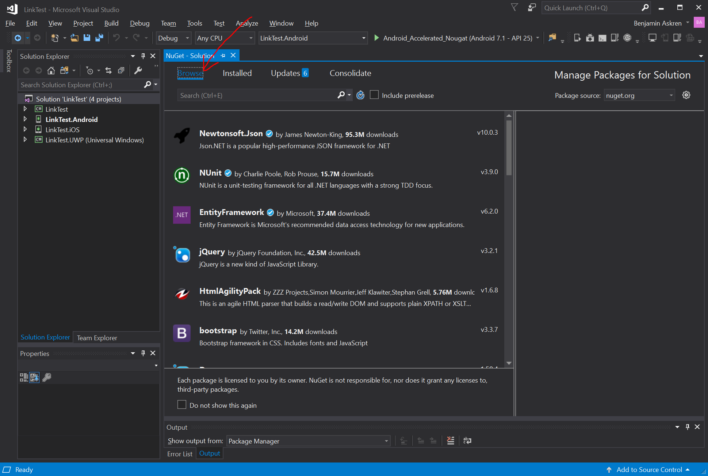
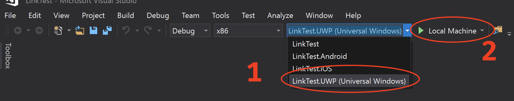
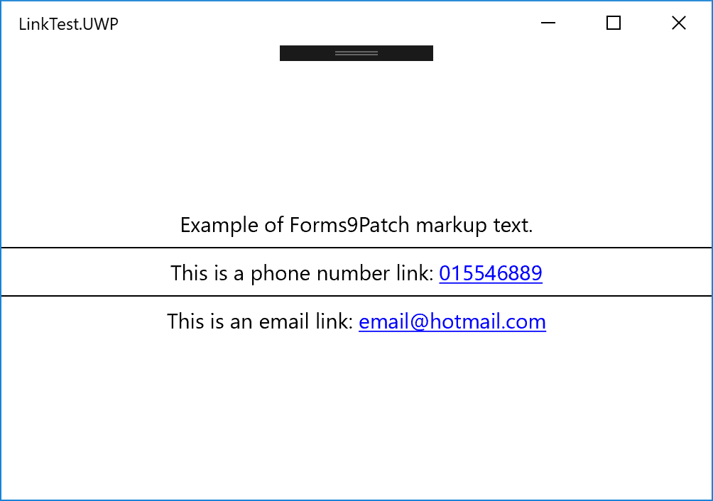

Getting Started: VisualStudio 2017 for Windows
Before you begin, check out the system requirements to be sure your application and development environment is ready.
This walk through demonstrates how to create an application that displays a label which is marked-up to show a phone number and email link. Tapping on those links will present a pop-up that asks permission to proceed with the phone call or email.
Create the LinkTest application as follows:
Launch VisualStudio.
Create a new Xamarin Forms project by clicking File | New | Project menu item.
In the New Project dialog, browse to Installed | Visual C# | Cross-Platform, select the Mobile App (Xamarin.Forms) template, set the Name and Solution name to
LinkTest, assure a suitable location for the project and click the [OK] button:
In the New Cross Platform App dialog, select the Blank App template, select .Net Standard Code Sharing Strategy, and then click the [OK] button:

Add the Forms9Patch NuGet package to each of your solution's projects:
In Solution Explorer, right-click on the LinkTest solution and select Manage NuGet Packages for Solution...:

... select the Browse tab ...:

... and search for "Forms9Patch":

Select the Forms9Patch Nuget package:

Apply it to all of your solution's projects by selecting the check box at the top of the project selection column:

Be sure the latest stable package is selected and then click [Install]:

Initialize Forms9Patch in each of your platform projects:
Android
Open MainActivity.cs in your solution's Android platform project.
Between
global::Xamarin.Forms.Forms.Init(this, bundle);andLoadApplication(new App());, add the Forms9Patch.Droid initialization call using the key for the LinkTest applications. The result should look like the following:global::Xamarin.Forms.Forms.Init(this, bundle); Forms9Patch.Droid.Settings.Initialize(this); LoadApplication(new App());
iOS
Open AppDelegate.cs in your solution's iOS platform project.
Between
global::Xamarin.Forms.Forms.Init();andLoadApplication(new App());, add the Forms9Patch.iOS initialization call using the key for the LinkTest applications. The result should look like the following:global::Xamarin.Forms.Forms.Init(); Forms9Patch.iOS.Settings.Initialize(this); LoadApplication(new App());
UWP
Open App.xaml.cs in your solution's UWP platform project.
Find the following line
Xamarin.Forms.Forms.Init(e);... and replace it with the following lines:
Xamarin.Forms.Forms.Init(e, Forms9Patch.UWP.Settings.AssembliesToInclude); Forms9Patch.UWP.Settings.Initialize(this);
Update your application's MainPage content (MainPage.xaml) to use Forms9Patch elements:
In Solution Explorer, in the LinkTest shared .NetStandard project (not the LinkTest.UWP platform project), double-click MainPage.xaml to open it.
Update MainPage.xaml with the following changes. This code declaratively defines the user interface for the page.
<?xml version="1.0" encoding="utf-8" ?> <ContentPage xmlns="http://xamarin.com/schemas/2014/forms" xmlns:x="http://schemas.microsoft.com/winfx/2009/xaml" xmlns:Forms9Patch="clr-namespace:Forms9Patch;assembly=Forms9Patch" xmlns:local="clr-namespace:LinkTest" x:Class="LinkTest.MainPage"> <ContentPage.Padding> <OnPlatform x:TypeArguments="Thickness"> <On Platform="iOS" Value="20, 40, 20, 20" /> <On Platform="Android, WinPhone, Windows" Value="20" /> </OnPlatform> </ContentPage.Padding> <StackLayout VerticalOptions="Center"> <Forms9Patch:Label HorizontalTextAlignment="Center"> Example of Forms9Patch markup text. </Forms9Patch:Label> <BoxView HeightRequest="1" Color="Black"></BoxView> <Forms9Patch:Label x:Name="PhoneLabel" HorizontalTextAlignment="Center" TextColor="Black"> <![CDATA[This is a phone number link: <a id="link1" href="tel:+353015546889">015546889</a> ]]> </Forms9Patch:Label> <BoxView HeightRequest="1" Color="Black"></BoxView> <Forms9Patch:Label x:Name="EmailLabel" HorizontalTextAlignment="Center" TextColor="Black"> <![CDATA[This is an email link: <a id="link2" href="mailto:email@hotmail.com">email@hotmail.com</a> ]]> </Forms9Patch:Label> </StackLayout> </ContentPage>
Modify your application's MainPage source code (MainPage.xaml.cs) using the following code so it will respond to clicks / taps on the
Forms9Patch.Labelaction links.using System; using System.Collections.Generic; using System.Linq; using System.Text; using System.Threading.Tasks; using Xamarin.Forms; using Xamarin.Forms.Xaml; namespace LinkTest { //[XamlCompilation(XamlCompilationOptions.Compile)] public partial class MainPage : ContentPage { public MainPage() { InitializeComponent(); PhoneLabel.ActionTagTapped += ActionTagTapped; EmailLabel.ActionTagTapped += ActionTagTapped; } private void ActionTagTapped(object sender, Forms9Patch.ActionTagEventArgs e) { Forms9Patch.Toast.Create("Link Activated", "The link (id: " + e.Id + ", href:" + e.Href + ") was activated."); } } }Now, you're ready to build and run the LinkTest app on a platform. Since you're developing this app on Windows, how about running LinkTest.UWP?
Go to the Startup Project Selection drop down and sel ect the
LinkTest.UWP (Universal Windows)project
Click the [> LocalMachine] button to start the build-run process
After the build is complete, the package will deploy to Windows and you will see the following application:

Click on any of the links and you should see something like the following:

Try changing the Startup Project to
TestLink.Androidand run it on an x86 based Android emulator.Because of Forms9Patch's more comprehensive
Forms9Patch.Clipboardfunctionality, you will have to add the following code to your Android project'sResources/Values/string.xmlfile,before you can build your Android project.<string name="forms9patch_copy_paste_authority">your_Android_app_package_name_here.f9pcopypaste</string>I know - it's a pain. At some point of time, I'll have to see if I can use some of the trickery used by the Xamarin.Facebook Nuget Package to get rid of this requirement.
BE SURE YOU DON'T RUN IT ON AN ARM EMULATOR.